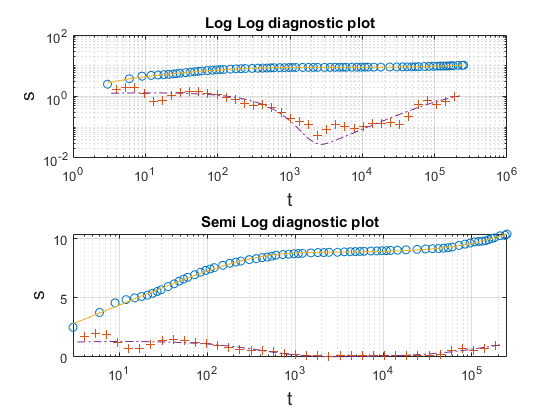
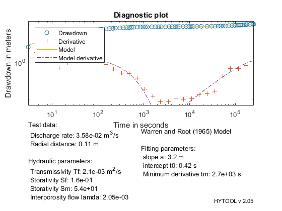

Pumping test in a double porosity aquifer
This demonstrates the interpretation of a pumping test with the Warren and Root (1965) solution
Copyright 1998-2007 - Ph. Renard & Co. - GNU GENERAL PUBLIC LICENSE
Contents
The data set for this example comes from the following reference: Moench, A. 1984. Double porosity model for a fissured groundwater reservoir with fracture skin. Water Resources Research, 20(7), 831-846. Table 2, Page 838.
General Information:
Fissured tertiary volcanic rocks in the vicinity of the Yucca Mountain at Nevada Test Site. One pumped well UE-25b#1 and one observation well UE-25a#1. Pumping duration was about three days.
Let us first load the data and plot the diagnostic.
clear
| HYTOOL Demo |

We then define the values of the field parameters that are required for the interpretation:
e=400; % Estimated reservoir thickness in m rw=0.11; % Radius of well in m rc=0.11; % Radius of casing in m Q=3.58e-2; % Flow rate m3/s
Once the data have been loaded and the parameter defined, we can interpret the data. We do that as usually in two steps. First the parameters p of the model are estimated with the function war_gss. Then we find an optimum fit.
p=war_gss(t,s); p=fit('war',p,t,s); trial('war',p,t,s)
Norm of Norm of
Iteration SSE Gradient Step
-----------------------------------------------------------
0 166.887
1 120.147 936.56 3103.73
2 90.2622 1107.05 3279.48
3 20.032 261.864 7831.85
4 17.169 1537.2 13436.9
5 11.4444 829.59 3314.15
6 6.99002 119.415 59.8061
7 6.3463 52.1156 50.003
8 5.9563 39.4448 146.165
9 5.60526 33.9259 164.469
10 5.33282 326.393 1455.37
11 4.15449 202.694 367.221
12 2.37682 89.6147 454.105
13 1.43344 40.9653 297.199
14 0.976386 18.4723 224.053
15 0.970898 40.1327 522.947
16 0.598836 12.7197 97.715
17 0.541449 0.515313 15.5706
18 0.541295 0.00320084 2.53045
19 0.541295 0.000502889 0.0380495
20 0.541295 0.00093249 0.0116161
Iterations terminated: relative change in SSE less than OPTIONS.TolFun
 We can then display the result of the interpretation. Hytool find that the folowing values fort the transmissivity :
Pumping well :T = 2.1 e-3 m2/s
war_rpt(p,t,s,[Q,rw],'Diagnostic plot')
 The results are in reasonable agreement with the values found by Moench (1984): T = 3.3 E-3 m2/s
We then find that the fits are rather similar and both acceptable.